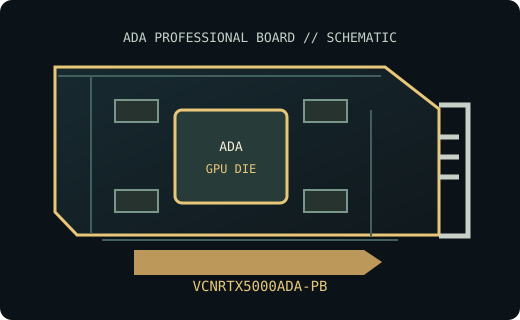

[ NVIDIA // PROFESSIONAL WORKSTATION GRAPHICS ]
PNY NVIDIA RTX 5000 Ada Generation 32 GB
Partner-built professional desktop GPU board. This record identifies the PNY manufacturer SKU VCNRTX5000ADA-PB, not merely a GPU family or another memory-capacity variant. Verify the product label, board revision, system qualification and current driver support before deployment.

MODEL IDENTIFICATION: PNY part VCNRTX5000ADA-PB; NVIDIA Ada workstation board. This listing is the named professional desktop board SKU and does not combine it with laptop, server, Max-Q, SFF (unless identified above), or adjacent-capacity variants.
Recorded board SKU specifications
| Manufacturer / exact board SKU | PNY Technologies / VCNRTX5000ADA-PB — PNY NVIDIA RTX 5000 Ada Generation 32 GB |
|---|---|
| Generation / GPU chip | Ada Lovelace / AD102; 12,800 CUDA cores; 400 fourth-generation Tensor Cores; 100 third-generation RT Cores |
| VRAM type / capacity / bus | 32 GB GDDR6 with ECC; 256-bit memory interface; 576 GB/s bandwidth |
| Board power / power connector | 250 W maximum board power; one 16-pin PCIe auxiliary connector (CEM5/12VHPWR class) |
| Host interface | PCI Express 4.0 x16 |
| Display outputs | Four DisplayPort 1.4a |
| Board dimensions / form factor | Full-height, full-length, dual-slot active-cooled board; 267 × 112 mm (10.5 × 4.4 in) |
| Cooling | Active fansink; provide chassis airflow and clear the exact slot and board envelope noted above. |
| SKU boundary | One PNY VCNRTX5000ADA-PB board. Do not transfer power, connector, memory or mechanical specifications from another RTX model or revision. |
Drivers and platform compatibility
Use NVIDIA RTX Enterprise production-branch or new-feature-branch drivers only when the release supported-product list explicitly includes this GPU for the target OS. Check NVIDIA's driver selector and release notes for the installed Windows 10/11 64-bit or supported Linux distribution/kernel; compatibility and workstation application certification are version-specific.
Install in a PCIe workstation with suitable slot wiring, firmware, board clearance, bracket, PSU cabling, airflow and cooling. Meet the card's exact auxiliary power requirement where applicable; slot capability alone does not ensure the host PSU, chassis or workload is supported. Check the PNY card documentation and workstation OEM qualification list before use.
- Match power connectors and cabling to the SKU-specific manual; never substitute CPU/EPS leads.
- Confirm monitors, adapters, display modes and multi-display limits against the board and driver manuals.
- Retain the board label, PNY part number, revision and VBIOS identifier for service and driver diagnosis.
Manufacturer and board-partner sources
- NVIDIA official product documentation for RTX 5000 Ada Generation 32 GBGPU-generation or model product documentation published by NVIDIA; consult the cited revision for reference specifications.
- PNY official product documentation for part VCNRTX5000ADA-PBBoard-partner product reference for this PNY SKU; confirm the part number and hardware revision on the actual card.
- NVIDIA official graphics driver lookupUse the current supported-product and operating-system tables for RTX Enterprise driver compatibility.
Partner and reference boards may differ. The board's product label, current manual and source revision govern fit and installation.